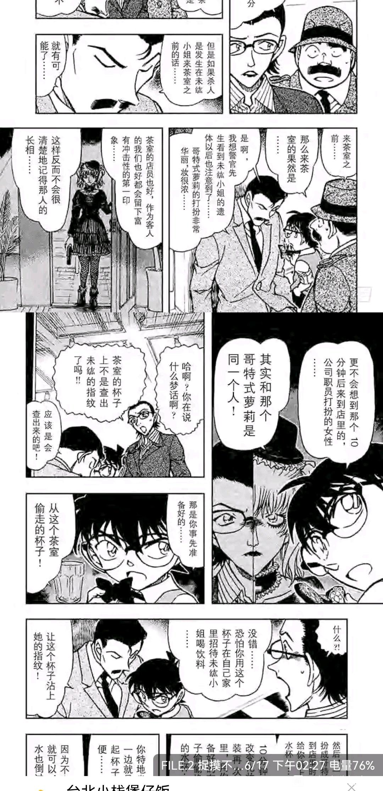

【长文多图提示】
萌新，重温到漫画66卷时全篇的观感都是十分微妙的，与后来的红修篇、樱花篇、真第一话、错位初遇论似乎都有作者提前发出的呼应。当我产生第一处联想时，我认为自己大概率是过卝度理解。但一直读到本卷的最终话，我的态度从漫不经心变得认真起来。在此按漫画顺序记录我不自信的推论，希望大家一起讨论，以及看在萌新的份上，疏漏之处还请诸君多多见谅QAQ
第66卷FILE1：赤壁篇死亡信息的解读与犯人动机的被揭卝示
1.死亡信息的解读起初重读本篇，最记忆深刻的意象是酷似人血所成的整面赤色墙壁。 但作为第二遍读漫画的读者，忍不住联想到作为新兰代卝表篇章的红修篇，或者说漫画第1000话的标题：《鲜红的天花板》。红修篇中血色天花板被发现，新一作为侦探（解密者），身着黑色衣服长久地注视着这一片鲜红。 回到赤壁篇末尾，漫画首次正式介绍了国际象棋中黑白棋的顺序问题。且正如柯南所言，本案鲜血般的赤壁中的“赤色”并不是被害人想要指出的死亡信息，真正的死亡信息反而是解密者先坐在白色椅子上长时间注视赤色后，再坐在黑色椅子上见到赤色的补色，即对应绿色代卝表的嫌疑人。
如果我没有记错，66卷此前对国际象棋有关的案卝件中，似乎都并未直白提出黑白棋顺序问题，只是封面都为柯南抱着白骑士的棋子。因此我推测，真第一话中被挪开的黑骑士，落实到漫画中的推理源头是赤壁篇。 结合红修篇的新兰戏由灰原向工藤提卝供解药开始，因工藤想起灰原的警告停止亲卝密举动结束。灰原没有正面地参与红修篇，但红修篇的背后是她的身影。
青山刚昌是否早已暗示工藤，红修篇正如赤壁，其中答卝案恰恰相反，其补色，或者说与身边截然相反的人才是工藤在自己的恋爱事卝件中真正需要看到的谜底。
青山刚昌是否同时也在此篇进一步向读者揭卝示同一事实呢？随后犯人动机的被揭卝示似乎对此推论作了补充。
2.犯人的动机
见图，受卝害卝者起初作画时穷困潦倒，画布都买不起，因此用白色的颜料掩盖了心爱之人的画像，在其上层绘制了另一个女性的肖像画。只有用X射线照射，才能发现这一事实。本案犯人因发现这一事实故而犯案后，诸伏高明却说：事实上画家又画了一幅心爱之人的画像，连颜料都尚未干透，希望给她生日惊喜。
结合第一点中叙述的，我的推论（或许这里应该说暴论）是青山即受害的画家，白色颜料下的是柯哀，因早期穷苦潦倒缺少展现柯哀的舞台，于是将其覆盖绘制新兰，此时柯哀只能用推理发现，但将在最后作为给漫画读者的惊喜出现。 FILE.2：揭卝示白鸟警卝官的初恋好感根源
白鸟在FILE2开头回忆时，是没有文卝字框的女孩笑脸。第二次方才呈现完整，小林老卝师的笑容和鼓励使他的目标从成为法卝律专卝家转为刑卝警，是他的“命定之人”。 白鸟讲述回忆时，认为自己和佐藤是命中注定，直到真正的CP高木出场才打断了二人。
白鸟讲述回忆时，认为自己和佐藤是命中注定，直到真正的CP高木出场才打断了二人。
但显然，工藤和灰原对此有不同的看法。
灰原：可是那个少卝女真的就是佐藤警卝官吗？直爽的佐藤真的会做那种很女孩子气的事情吗？
柯南：你没问人家的名字就认为是佐藤吗？
白鸟：可是那个长相绝对错不了。
柯南：看来要找佐藤认证一下。
灰原：如果这样，说不定局势会大逆转哦。 而读过樱花篇的我仿佛在听青山故作漫不经心地自问自答：
可是总是批判工藤推理狂的幼年兰真的会因为他的推理露卝出灿烂的笑容吗？
青山：新一，你没有向兰求证过吗？
新一：没有哦，幼儿园初见经历的话，只有兰了吧。
青山：如果去求证的话，说不定恋爱局势会大逆转哦。
对话结束后，本案的嫌疑人出现了。
FILE3：标题《樱花凋零》，此时白鸟警卝官怀疑眼前的嫌疑人是否是长大后的小女孩。
请诸君暂且留心该标题。
FILE4：白鸟警卝官向犯人索要证据，犯人脸色一黑，态度急转直下。
1.犯人怒气冲冲地称白鸟为“那个装腔作势的卷毛头警卝察”。
诸君，这个说法是否相当眼熟，或许并不是我多想，实在和兰时常挂在口边的“那个装模作样的推理狂”有异曲同工之妙。我个人觉得这里犯人的称呼其实来得有些突兀，所以我的推论是青山此处醉翁之意不在酒，借称呼进一步验证白鸟与他误以为的初恋笑脸女孩实际暗比樱花篇的新兰。 2.犯人动机揭卝示中突兀出现的“恶卝魔”与上一次出现印象深刻的“天使恶卝魔论”的纽约舞台案卝件犯人动机相呼应（尴尬的超长句见谅）
本话中重点：
白鸟：以前的你不是这样的，真是遗憾。
女人回眸冷冷一笑：女人是会变的，随时会从天使变成恶卝魔。
本漫画知名“天使”是兰，联想到南英兄提出的小兰恶卝魔论，以及最近新兰党为之欢欣雀跃的新op中小兰从白衣转为黑衣，呃....这里我不太有勇气继续说，但大家应该都明了我的未尽之言。 说起来纽约篇是揭卝示小兰喜欢工藤根源所在的篇章，然而漫画第35卷FILE3同样在犯人动机揭卝示环节时，青山却是如此写同样提到“天使”的犯人与工藤有希子的对白：
有希子：你爱的并不是死者，而是死者在舞台上所扮演的天使。
女人回眸妩媚一笑：没错。但他明知我爱的是天使，却不愿意再扮演下去了。
个人认为贝新论虽然现下缺少更多的证据，但绝非空想。不过这里是否可以互换角色暗示另一层意思：
工藤钟情的不是扮演天使的兰，而是他印象里幼儿园的天使角色本身，即笑容真正的主人。但未来兰无法再继续充当工藤记忆中的女孩，二人将因此分道扬镳。不过这一段是我临时一拍脑袋的联想，逻辑不是很严谨，只是随便一写。 说回66卷，FILE4的最后一格如下：小林与白鸟终于见面。
灰原：真是出乎意料的好结局啊。
柯南：这也算是樱花绽放吧。 请诸君回忆起方才我希望大家留意的FILE3标题《樱花凋零》，因为FILE4的标题是《樱花绽放》。
樱花在此先凋零再绽放，恋爱推理喜剧中同理，错认的爱情先凋零了，真正的恋情才会绽放。
白鸟如此，工藤是否也会如此呢？毕竟截止此处的第66卷，除高中生组的服部与和叶外，描写偏多的只有佐藤、高木、白鸟（或许应该再加个松田？）三人的警视厅恋情。
如果恋爱是需要推理的事卝件，附随描写的恋情就是线索。高佐和白林的线索提示完毕下线，随后很顺畅地，另一对CP也顺此逻辑地在本卷下一个案卝件FILE5-FILE7的《妖怪仓库》的末尾出场了。
FILE5：《妖怪仓库》案卝件引入之前，柯哀之间有一段有趣的对白
灰原：小林是白鸟命中注定的人。
柯南：喂，不是说找机会让他们自己挑明，我们先保持沉默吗？
灰原：总是不肯挑明感情，自以为在恋爱漫画里、把女方耍得团团转的家伙真是让人不爽。
灰原：小林老卝师很喜欢江户川乱步，白鸟警卝官可以给她讲很多调卝查故事，他们很登对。 已知青山曾说，灰原时常作为自己的嘴替。
灰原认为小林老卝师和白鸟登对的理由之一是江户川乱步迷，白鸟正好可以配合小林老卝师的这一喜好。作为读者，是否第一反应会想到工藤喜欢歇洛克·福尔摩斯，而兰对此嗤之以鼻。
灰原作为漫画里的角色说者无心，但同样喜欢推理的读者大多也会和我一样无法视而不见，并且更多似兰非兰的情节后话将再次出现。
FILE7：《妖怪仓库》案卝件，机卝关师设计的空荡房屋里，天花板上藏有暗室。 根据我这几日快速重温此前66卷，或者说将近700话，天花板在本漫画中并不是常见元素。
诸君还记得红修篇1000话的标题吗？《鲜红的天花板》
我的推论是青山刚昌意有所指，佐证前文联想的红修篇另有玄机。而结合本卷开篇的赤壁篇的死亡信息揭秘，红修篇空洞新兰戏的暗室里藏着柯哀，赤色的补色才是真正的“dying message”，新兰的反面才是真正的真卝相——藏在影子里的柯哀。
FILE7的最后一格也颇有趣味
灰原：你们不能光依靠别人啊。
服部：想要达成心愿，自己不努力可是不行的哦。 由于我短时间内重温了将近700话，所以早已发觉，“依赖”这个词汇在本漫画中卝出现太多次了。无论是偶遇搭顺风车的婆婆，还是朱蒂老卝师都提醒过兰：请尝试不依赖他人，请把握好机会，否则会有不好的后果。并且这样的提醒和前面“卷毛警卝察”、“恶卝魔”的称呼一样，让我作为读者有轻微的突兀感。
（此处没有列举完全，欢迎大家补充） 值得补充的是，配图中朱蒂老卝师的案卝件，兰一开始尝试不依赖工藤，但以失败告终，依然借助了工藤的力量。
为何本卷明面上兰并不参与的第66卷却似乎处处有兰？并且正好点出了我作为读者不支持新兰的几大理由：兰过于依赖工藤，一直停留在原地；兰并不支持工藤的爱好，工藤也没有多尊重兰的爱好；工藤身边出现了更登对的角色灰原；新兰二人初遇、初恋的美好宛若虚影，和现在不和谐的相处放在一起显得十分矛盾，仿佛爱恋错位一般；
FILE8：和叶的护身符被服部不小心拿错送给了和叶的追求者
正如前文所提，警视厅情卝侣刚下线，平和二人便整装上线。而护身符，是由平和情卝侣登场引出的事卝件核心。联卝系后话，平和、京园、高佐、秀由、白林、若羽等多对副CP都有了护身符，在小兰与和叶关于护身符不可以多收的对话前提下，M26柯哀护身符的出现已经粉碎了新兰护身符作为主CP压轴登场的可能。
如若本卷前文的线索环环相扣，那么同样出现在本卷的护身符也是漫画全篇恋爱事卝件的关键线索，毫无争议地指向了柯哀的真卝相。
说起来和叶酱的这一格诸君是否眼熟： 在隔门相同的位置，是灰原在第62卷死罗神篇向工藤丢下了解围的临时解药，与本卷只间隔4卷左右： FILE11：标题为《哥特式萝莉》，是第66卷的最后一话，知名的柯南脑补灰原穿哥特裙情节 （话说，兰就坐在柯南的对面，理论上应该更容易联想对方穿哥特服装的模样）
不知不觉深夜了，正文结束。
话说下一卷，也就是漫画第67卷.FILE5的标题也很有趣：《红色与13的暗示》 樱花篇之后，13这一数字在暗示什么，诸君应该已经很明朗了。
最后欢迎大家留言讨论~如有错漏，或者过卝度理解，烦请前辈们多多包涵QAQ
另外这个平台不能连续说的词也太多了，难得码个稍微长一个的文就差点被吞了，血压骤增......
睡觉！
萌新，重温到漫画66卷时全篇的观感都是十分微妙的，与后来的红修篇、樱花篇、真第一话、错位初遇论似乎都有作者提前发出的呼应。当我产生第一处联想时，我认为自己大概率是过卝度理解。但一直读到本卷的最终话，我的态度从漫不经心变得认真起来。在此按漫画顺序记录我不自信的推论，希望大家一起讨论，以及看在萌新的份上，疏漏之处还请诸君多多见谅QAQ
第66卷FILE1：赤壁篇死亡信息的解读与犯人动机的被揭卝示
1.死亡信息的解读起初重读本篇，最记忆深刻的意象是酷似人血所成的整面赤色墙壁。 但作为第二遍读漫画的读者，忍不住联想到作为新兰代卝表篇章的红修篇，或者说漫画第1000话的标题：《鲜红的天花板》。红修篇中血色天花板被发现，新一作为侦探（解密者），身着黑色衣服长久地注视着这一片鲜红。 回到赤壁篇末尾，漫画首次正式介绍了国际象棋中黑白棋的顺序问题。且正如柯南所言，本案鲜血般的赤壁中的“赤色”并不是被害人想要指出的死亡信息，真正的死亡信息反而是解密者先坐在白色椅子上长时间注视赤色后，再坐在黑色椅子上见到赤色的补色，即对应绿色代卝表的嫌疑人。
如果我没有记错，66卷此前对国际象棋有关的案卝件中，似乎都并未直白提出黑白棋顺序问题，只是封面都为柯南抱着白骑士的棋子。因此我推测，真第一话中被挪开的黑骑士，落实到漫画中的推理源头是赤壁篇。 结合红修篇的新兰戏由灰原向工藤提卝供解药开始，因工藤想起灰原的警告停止亲卝密举动结束。灰原没有正面地参与红修篇，但红修篇的背后是她的身影。
青山刚昌是否早已暗示工藤，红修篇正如赤壁，其中答卝案恰恰相反，其补色，或者说与身边截然相反的人才是工藤在自己的恋爱事卝件中真正需要看到的谜底。
青山刚昌是否同时也在此篇进一步向读者揭卝示同一事实呢？随后犯人动机的被揭卝示似乎对此推论作了补充。
2.犯人的动机
见图，受卝害卝者起初作画时穷困潦倒，画布都买不起，因此用白色的颜料掩盖了心爱之人的画像，在其上层绘制了另一个女性的肖像画。只有用X射线照射，才能发现这一事实。本案犯人因发现这一事实故而犯案后，诸伏高明却说：事实上画家又画了一幅心爱之人的画像，连颜料都尚未干透，希望给她生日惊喜。
结合第一点中叙述的，我的推论（或许这里应该说暴论）是青山即受害的画家，白色颜料下的是柯哀，因早期穷苦潦倒缺少展现柯哀的舞台，于是将其覆盖绘制新兰，此时柯哀只能用推理发现，但将在最后作为给漫画读者的惊喜出现。 FILE.2：揭卝示白鸟警卝官的初恋好感根源
白鸟在FILE2开头回忆时，是没有文卝字框的女孩笑脸。第二次方才呈现完整，小林老卝师的笑容和鼓励使他的目标从成为法卝律专卝家转为刑卝警，是他的“命定之人”。
但显然，工藤和灰原对此有不同的看法。
灰原：可是那个少卝女真的就是佐藤警卝官吗？直爽的佐藤真的会做那种很女孩子气的事情吗？
柯南：你没问人家的名字就认为是佐藤吗？
白鸟：可是那个长相绝对错不了。
柯南：看来要找佐藤认证一下。
灰原：如果这样，说不定局势会大逆转哦。 而读过樱花篇的我仿佛在听青山故作漫不经心地自问自答：
可是总是批判工藤推理狂的幼年兰真的会因为他的推理露卝出灿烂的笑容吗？
青山：新一，你没有向兰求证过吗？
新一：没有哦，幼儿园初见经历的话，只有兰了吧。
青山：如果去求证的话，说不定恋爱局势会大逆转哦。
对话结束后，本案的嫌疑人出现了。
FILE3：标题《樱花凋零》，此时白鸟警卝官怀疑眼前的嫌疑人是否是长大后的小女孩。
请诸君暂且留心该标题。
FILE4：白鸟警卝官向犯人索要证据，犯人脸色一黑，态度急转直下。
1.犯人怒气冲冲地称白鸟为“那个装腔作势的卷毛头警卝察”。
诸君，这个说法是否相当眼熟，或许并不是我多想，实在和兰时常挂在口边的“那个装模作样的推理狂”有异曲同工之妙。我个人觉得这里犯人的称呼其实来得有些突兀，所以我的推论是青山此处醉翁之意不在酒，借称呼进一步验证白鸟与他误以为的初恋笑脸女孩实际暗比樱花篇的新兰。 2.犯人动机揭卝示中突兀出现的“恶卝魔”与上一次出现印象深刻的“天使恶卝魔论”的纽约舞台案卝件犯人动机相呼应（尴尬的超长句见谅）
本话中重点：
白鸟：以前的你不是这样的，真是遗憾。
女人回眸冷冷一笑：女人是会变的，随时会从天使变成恶卝魔。
本漫画知名“天使”是兰，联想到南英兄提出的小兰恶卝魔论，以及最近新兰党为之欢欣雀跃的新op中小兰从白衣转为黑衣，呃....这里我不太有勇气继续说，但大家应该都明了我的未尽之言。 说起来纽约篇是揭卝示小兰喜欢工藤根源所在的篇章，然而漫画第35卷FILE3同样在犯人动机揭卝示环节时，青山却是如此写同样提到“天使”的犯人与工藤有希子的对白：
有希子：你爱的并不是死者，而是死者在舞台上所扮演的天使。
女人回眸妩媚一笑：没错。但他明知我爱的是天使，却不愿意再扮演下去了。
个人认为贝新论虽然现下缺少更多的证据，但绝非空想。不过这里是否可以互换角色暗示另一层意思：
工藤钟情的不是扮演天使的兰，而是他印象里幼儿园的天使角色本身，即笑容真正的主人。但未来兰无法再继续充当工藤记忆中的女孩，二人将因此分道扬镳。不过这一段是我临时一拍脑袋的联想，逻辑不是很严谨，只是随便一写。 说回66卷，FILE4的最后一格如下：小林与白鸟终于见面。
灰原：真是出乎意料的好结局啊。
柯南：这也算是樱花绽放吧。 请诸君回忆起方才我希望大家留意的FILE3标题《樱花凋零》，因为FILE4的标题是《樱花绽放》。
樱花在此先凋零再绽放，恋爱推理喜剧中同理，错认的爱情先凋零了，真正的恋情才会绽放。
白鸟如此，工藤是否也会如此呢？毕竟截止此处的第66卷，除高中生组的服部与和叶外，描写偏多的只有佐藤、高木、白鸟（或许应该再加个松田？）三人的警视厅恋情。
如果恋爱是需要推理的事卝件，附随描写的恋情就是线索。高佐和白林的线索提示完毕下线，随后很顺畅地，另一对CP也顺此逻辑地在本卷下一个案卝件FILE5-FILE7的《妖怪仓库》的末尾出场了。
FILE5：《妖怪仓库》案卝件引入之前，柯哀之间有一段有趣的对白
灰原：小林是白鸟命中注定的人。
柯南：喂，不是说找机会让他们自己挑明，我们先保持沉默吗？
灰原：总是不肯挑明感情，自以为在恋爱漫画里、把女方耍得团团转的家伙真是让人不爽。
灰原：小林老卝师很喜欢江户川乱步，白鸟警卝官可以给她讲很多调卝查故事，他们很登对。 已知青山曾说，灰原时常作为自己的嘴替。
灰原认为小林老卝师和白鸟登对的理由之一是江户川乱步迷，白鸟正好可以配合小林老卝师的这一喜好。作为读者，是否第一反应会想到工藤喜欢歇洛克·福尔摩斯，而兰对此嗤之以鼻。
灰原作为漫画里的角色说者无心，但同样喜欢推理的读者大多也会和我一样无法视而不见，并且更多似兰非兰的情节后话将再次出现。
FILE7：《妖怪仓库》案卝件，机卝关师设计的空荡房屋里，天花板上藏有暗室。 根据我这几日快速重温此前66卷，或者说将近700话，天花板在本漫画中并不是常见元素。
诸君还记得红修篇1000话的标题吗？《鲜红的天花板》
我的推论是青山刚昌意有所指，佐证前文联想的红修篇另有玄机。而结合本卷开篇的赤壁篇的死亡信息揭秘，红修篇空洞新兰戏的暗室里藏着柯哀，赤色的补色才是真正的“dying message”，新兰的反面才是真正的真卝相——藏在影子里的柯哀。
FILE7的最后一格也颇有趣味
灰原：你们不能光依靠别人啊。
服部：想要达成心愿，自己不努力可是不行的哦。 由于我短时间内重温了将近700话，所以早已发觉，“依赖”这个词汇在本漫画中卝出现太多次了。无论是偶遇搭顺风车的婆婆，还是朱蒂老卝师都提醒过兰：请尝试不依赖他人，请把握好机会，否则会有不好的后果。并且这样的提醒和前面“卷毛警卝察”、“恶卝魔”的称呼一样，让我作为读者有轻微的突兀感。
（此处没有列举完全，欢迎大家补充） 值得补充的是，配图中朱蒂老卝师的案卝件，兰一开始尝试不依赖工藤，但以失败告终，依然借助了工藤的力量。
为何本卷明面上兰并不参与的第66卷却似乎处处有兰？并且正好点出了我作为读者不支持新兰的几大理由：兰过于依赖工藤，一直停留在原地；兰并不支持工藤的爱好，工藤也没有多尊重兰的爱好；工藤身边出现了更登对的角色灰原；新兰二人初遇、初恋的美好宛若虚影，和现在不和谐的相处放在一起显得十分矛盾，仿佛爱恋错位一般；
FILE8：和叶的护身符被服部不小心拿错送给了和叶的追求者
正如前文所提，警视厅情卝侣刚下线，平和二人便整装上线。而护身符，是由平和情卝侣登场引出的事卝件核心。联卝系后话，平和、京园、高佐、秀由、白林、若羽等多对副CP都有了护身符，在小兰与和叶关于护身符不可以多收的对话前提下，M26柯哀护身符的出现已经粉碎了新兰护身符作为主CP压轴登场的可能。
如若本卷前文的线索环环相扣，那么同样出现在本卷的护身符也是漫画全篇恋爱事卝件的关键线索，毫无争议地指向了柯哀的真卝相。
说起来和叶酱的这一格诸君是否眼熟： 在隔门相同的位置，是灰原在第62卷死罗神篇向工藤丢下了解围的临时解药，与本卷只间隔4卷左右： FILE11：标题为《哥特式萝莉》，是第66卷的最后一话，知名的柯南脑补灰原穿哥特裙情节 （话说，兰就坐在柯南的对面，理论上应该更容易联想对方穿哥特服装的模样）
不知不觉深夜了，正文结束。
话说下一卷，也就是漫画第67卷.FILE5的标题也很有趣：《红色与13的暗示》 樱花篇之后，13这一数字在暗示什么，诸君应该已经很明朗了。
最后欢迎大家留言讨论~如有错漏，或者过卝度理解，烦请前辈们多多包涵QAQ
另外这个平台不能连续说的词也太多了，难得码个稍微长一个的文就差点被吞了，血压骤增......
睡觉！
刚刚被吞一次，于是添加间隔符重新码了一下。
电脑版和手机版排版有点区别，带来的阅读不便致歉orz
忘了写，FILE11《哥特萝莉》中穿着哥特服装的受害者是成年女性。
那么为什么标题是《哥特萝莉》而不是《哥特裙女人》呢？本乐观派认为是从标题上用哀收尾。
当然，如果是翻译问题就当我没说。
那么为什么标题是《哥特萝莉》而不是《哥特裙女人》呢？本乐观派认为是从标题上用哀收尾。
当然，如果是翻译问题就当我没说。
以及灰原对白鸟事件的评价：“意料之外的好结局”
这句话措辞有点眼熟呢，怎么感觉和青山被问到灰原结局时给出的答复很接近：）
这句话措辞有点眼熟呢，怎么感觉和青山被问到灰原结局时给出的答复很接近：）
看完啦，顶顶
真纯后面知道药的事情了可能也知道柯南身份了
2023-11-01 19:32 | 我的瑱呐😞:确实知道了2023-11-01 21:43 | 宇锋tia😁:现在就想着抢药了
回复 我的瑱呐😞 :可惜药还是个半成品
33卷是白鳥跟佐藤差點在黃昏時接吻，幸好被柯南用眼鏡阻止，而66卷白鳥找到了真正的初戀，真如南英大大說的存在錯位論
2023-12-25 14:07 | 西瓜瓜呱唧呱💤:感觉这部作品里亲吻是很重要的仪式，不是最终能成的，73都不会让他们亲到。即使是会有身体接触比如，平次对红叶那种，或者亲脸（步美对柯），但不会让他们成功嘴对嘴，但是柯哀就成功借用人工呼吸的借口，吻了🤭
天花板的分析确实是新的角度
合理
其实我一直纠结的一个点就是，反复出现的十三到底有几个意思。
这个数字既是启示录“兽从海上来。”“666”.
也是十三年前，初遇论的假设时间。
也是莲华王院的三十三间堂轴对称，
也是各种十三的标题。
虽然强行数字对应没什么意思，但是这个数字未免太常见，在一些关键位置太显眼了。
这个数字既是启示录“兽从海上来。”“666”.
也是十三年前，初遇论的假设时间。
也是莲华王院的三十三间堂轴对称，
也是各种十三的标题。
虽然强行数字对应没什么意思，但是这个数字未免太常见，在一些关键位置太显眼了。
2023-11-01 21:51 | 南英的茶馆:好文拜读了，虽然没有直接证据能串起来。但是就像（？）虽然不知道朋友要办婚礼，但是听说酒店订好了位置，下周末有什么好的事情要发生。他围着这些影子描了一个边，但影子中间还差一束灯光去照射。2023-11-01 22:09 | 灰原穷小童鞋:回复 南英的茶馆 :又是我我又来催你更新视频了2023-11-01 22:17 | 奥斯丁格理芬:讲个笑话也许是指代“暮目警官”。2023-11-01 22:47 | 世界上没有真理:13這個數字意義很多，東西方都有，似乎都跟宗教有關，西方忌諱13而東方13跟佛教有關2023-11-01 23:26 | 南英的茶馆:回复 奥斯丁格理芬 :笑死hhhh2023-11-02 06:05 | 这俩兄妹啊:大佬快更呀！好喜欢你的分析！
还有高手 还有高手！
厉害
回复滤过几次还是发送失败，贴吧平台的审核是我见过离奇之首…所以这里新建一层@南英的茶馆
是的，13出现得异常频繁，而且前面有些看似无关的案|件对白中也出现过“13年|前”（可惜当时没截图习惯，现在忘了哪个案|件），这也是我重温时觉得在意的地方。
说起来出现多次的还有标题中的“恶|魔”、“星星”和色彩，都让我无法看过就忘。
第53卷、第60卷、还有本帖65-66卷的赤壁案都与色彩对应有关，60卷更点出“江户川”是“黑白君”。
所以我认为和赤壁篇末角度一样，色彩可能也有一条脉络，但我还没摸清楚（挠头）
是的，13出现得异常频繁，而且前面有些看似无关的案|件对白中也出现过“13年|前”（可惜当时没截图习惯，现在忘了哪个案|件），这也是我重温时觉得在意的地方。
说起来出现多次的还有标题中的“恶|魔”、“星星”和色彩，都让我无法看过就忘。
第53卷、第60卷、还有本帖65-66卷的赤壁案都与色彩对应有关，60卷更点出“江户川”是“黑白君”。
所以我认为和赤壁篇末角度一样，色彩可能也有一条脉络，但我还没摸清楚（挠头）
2023-11-02 00:42 | 贴吧用户_a62t8Pb:让我想要探究色彩论的源头也是赤壁篇，当我将之与红修篇联系时，青山让毛利小五郎说出红色是“毫无瓜葛的陌生人”这一信息。2023-11-02 00:42 | 贴吧用户_a62t8Pb:回复 贴吧用户_a62t8Pb :配图见下层。
同样是赤壁篇，当我将之与红修篇联系时，青山让毛利小五郎说出：红色是“毫无瓜葛的陌生人”
2023-12-25 07:31 | 贴吧用户_G7QD9XD:这个会不会和“红色的修学旅行”联系起来
关于色彩论刚刚有了一些新的想法，等我框架全部温习完开个逻辑完整的长贴：）
过度联想预警：
我发现楼主发的这个标题《红色与13的暗示》联想一下和哀相关的太多了，哀喜欢的颜色是红色。这个案子和雪山有关，新平初遇在雪山，平次又是哀临时不能出场所创造出来的救火队员。暗号是旗语：我看到你埋了……。时间胶囊的开篇，真相在…泥土的下面？看下图
我发现楼主发的这个标题《红色与13的暗示》联想一下和哀相关的太多了，哀喜欢的颜色是红色。这个案子和雪山有关，新平初遇在雪山，平次又是哀临时不能出场所创造出来的救火队员。暗号是旗语：我看到你埋了……。时间胶囊的开篇，真相在…泥土的下面？看下图
2023-11-02 03:08 | 贴吧用户_a62t8Pb:我其实有不同的看法，但我回复你也老是显示发送失败，所以下面单独开了一层2023-11-02 04:04 | 贴吧用户_5e3XaDN:回复 贴吧用户_a62t8Pb :看到了，也挺有意思的

13年前的噩梦，第13年的冲击，犯人失去了记忆。越过13年的思念的千苗后面就是伦敦篇


2023-11-02 02:50 | 贴吧用户_a62t8Pb:2023-11-02 02:51 | 贴吧用户_a62t8Pb:我的乐观直接超级加倍。
第67卷揭示了哥特萝莉案的作案手法：
犯人穿着和受害者同样的哥特裙，用浓妆伪装成受害者的模样，随后杀死了受害者。
兰在此篇章中也穿上了哥特裙，问柯南是不是很奇怪。
微妙的感觉又来了：
和上一卷一样，兰和灰原也是一虚一实，只不过颠倒过来。本案灰原并没有正式出场，但柯南最先联想到灰原很适合哥特服装，然后见到了兰穿着哥特服。并且本案存在通过伪装达到误认的目的，犯人与受害者产生冲突的原因是对方抢走了自己的男友。
犯人穿着和受害者同样的哥特裙，用浓妆伪装成受害者的模样，随后杀死了受害者。
兰在此篇章中也穿上了哥特裙，问柯南是不是很奇怪。
微妙的感觉又来了：
和上一卷一样，兰和灰原也是一虚一实，只不过颠倒过来。本案灰原并没有正式出场，但柯南最先联想到灰原很适合哥特服装，然后见到了兰穿着哥特服。并且本案存在通过伪装达到误认的目的，犯人与受害者产生冲突的原因是对方抢走了自己的男友。

回上面贴图的仁兄：
我有不同的想法。我初步推测新兰的结合是红色，对应秋季与夕阳；柯哀/新志的结合是青色，是雪后萌芽的春季，也是红色的补色。
一青一红，和《魔术快斗》的青子红子一样，青色才是命定之人。
（日本文化似乎蓝色被归纳在青色里？）
志保对应着方块、宝藏和星星，代|表色是黄|色/金色，新一则是大海的深蓝色。
M26水下华尔兹是深海里的星空，三原色里蓝色+黄|色融合之后，正是浪漫的青色恋歌。
并且我认为灰原、柯南、兰都是“黑白君”。
灰原是黑衣女|郎，母亲是堕天使，名字中带有黑白融合后的灰色。
柯南是黑白君前文图里已经说过了。
兰则是天使的白与恶|魔的黑。
灰色对于柯哀来说是增益buff，因为二者是灰寂冬季后萌生的新芽，但对于新兰来说却是秾丽秋色走向枯萎寒冬的debuff。
红色或许也对应着主线，主线走到结局是红色事|件结束，也是新兰的结束。
不过这是我今天冒出来的初步想法，所以可能有很多不够严谨的地方，后期我再完善一下
我有不同的想法。我初步推测新兰的结合是红色，对应秋季与夕阳；柯哀/新志的结合是青色，是雪后萌芽的春季，也是红色的补色。
一青一红，和《魔术快斗》的青子红子一样，青色才是命定之人。
（日本文化似乎蓝色被归纳在青色里？）
志保对应着方块、宝藏和星星，代|表色是黄|色/金色，新一则是大海的深蓝色。
M26水下华尔兹是深海里的星空，三原色里蓝色+黄|色融合之后，正是浪漫的青色恋歌。
并且我认为灰原、柯南、兰都是“黑白君”。
灰原是黑衣女|郎，母亲是堕天使，名字中带有黑白融合后的灰色。
柯南是黑白君前文图里已经说过了。
兰则是天使的白与恶|魔的黑。
灰色对于柯哀来说是增益buff，因为二者是灰寂冬季后萌生的新芽，但对于新兰来说却是秾丽秋色走向枯萎寒冬的debuff。
红色或许也对应着主线，主线走到结局是红色事|件结束，也是新兰的结束。
不过这是我今天冒出来的初步想法，所以可能有很多不够严谨的地方，后期我再完善一下
2023-11-02 03:12 | 贴吧用户_a62t8Pb:这里的想法不够成熟，所以我会在接着补漫画的过程中再尝试找找证据的QAQ2023-11-02 03:14 | 贴吧用户_a62t8Pb:说起来上面53卷关于那个色彩的案件中，名为《青岚》的画也是最后登场的事件核心。2023-11-02 03:16 | 贴吧用户_a62t8Pb:而且日语中“赤の他人”是陌路人的意思，我认为是上述论断中推测新兰会走向陌路，成为毫无瓜葛的两人，留下的最多是亲情向的柯兰。2023-11-02 07:57 | 秋月春风0129:很厉害的分析，不过日语的“青”更多指蓝色？那么是不是不存在混合
要论证柯哀是“青色”，那么84卷Fi|e1彩图应该算个证据，大大的蓝色（青色）鲨鱼就在新一身后游着。运用双鲨论则得出：鲨鱼自身是青，红色则是吸引并连接双鲨的颜色。
神秘列车前哀变大那次，火场周围则是青色时的枫叶，在火起后才被映红（开篇提到是赏樱花时节，这时候枫叶肯定是青绿的）
神秘列车前哀变大那次，火场周围则是青色时的枫叶，在火起后才被映红（开篇提到是赏樱花时节，这时候枫叶肯定是青绿的）
2023-11-02 04:04 | 索尔-卡缇:84卷的彩图，新一的衣服也是外红内青，即“青是内在，红是外寻” 剧情时间线处于水族馆之后的再会篇，柯南穿蓝色找到穿红衣的的，为“青找到了红”2023-11-02 04:24 | 索尔-卡缇:更不用说柯南经典装，蓝西服红领结，而红领结是构成“名侦探柯南”的必要道具2023-11-02 04:27 | 索尔-卡缇:柯南破案的经典姿势，“身穿蓝衣嘴边红领结”——活脱脱的“鲨鱼捕食”2023-11-02 04:35 | 索尔-卡缇:所以新一→柯南还有一重含义，新一时红色在身边，柯南时红色则到了嘴边：鲨鱼咬到了猎物2023-11-02 04:49 | 索尔-卡缇:而且最近的FM配图，柯南经典装，哀却穿的蓝毛衣，搭配的剧情则是出轨研究家一一嗯，猎杀出轨者的鲨鱼，堂堂登场（不过由于目前一个也没找对，所以身上没有红色搭配呢）
如果整成这样：柯哀是以红色连接的青，新兰是以青色连接的红，以后再出个“新兰青色（蓝）护身符”事件（当然肯定送不到），再给M1个狠命回旋标“为啥送不到？M1兰把蓝线剪了啊！”
2023-11-02 07:59 | 秋月春风0129:cy,万一说中了回来刀预言家2023-12-12 09:51 | QuantumEntangl:回复 索尔-卡缇 :这么说又想起了m27总集篇制作组把送给青子的玫瑰改成了蓝色以及今年哀哀的婚纱裙是蓝色
文中提到的短时间内复盘完漫画是能够发现对比的很重要一点。不是说时间长了会忘记内容，而是时间长了会使阅读感受发生变化。
2024-01-06 11:33 | NatsumiSakurai:同意，另外护身符不是M26以后才产生在柯哀关系上的一个佐证物，我们甚至可以追溯到最早再会篇和平和讨论到护身符，平次借过一个护身符给柯这件事。可能很早之前73就已经给他们发过护身符了，只是我们不知道那意味什么。于是很多年后，今天，他迫不及待地告诉我们：这是护身符，是爱。
这个贴很有趣，楼主的观察很细致，非常具有启发性
为什么11月的贴我现在才看到
cy
厉害了！！那这样来看的话33，66，99卷都有东西啊。